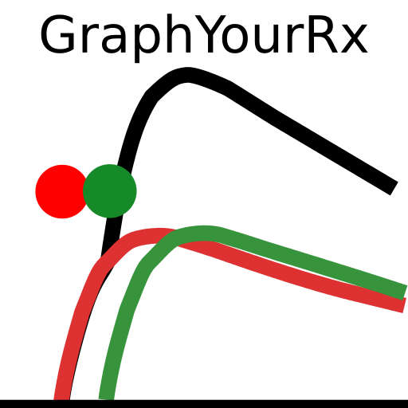

 (GraphYourRx)[wassname.org/GraphYourRx/index.html) (Starving Snake)[wassname.org/StarvingSnake/index.html) (How secure is my passphrase?)[wassname.org/howsecureismypassphrase/index.html) (Generate Identicons)[wassname.org/identicon/index.html) (Wassname on github)[https://gist.github.com/wassname)